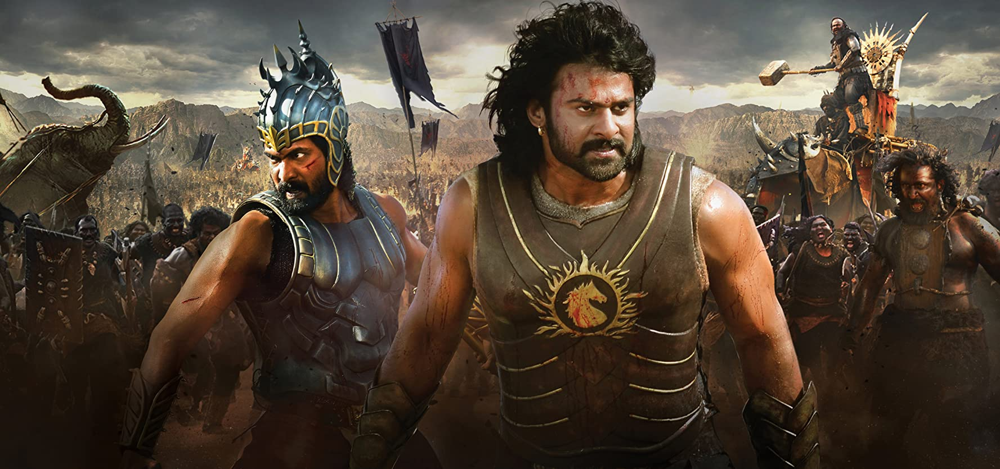
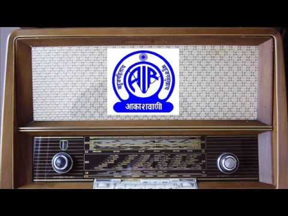
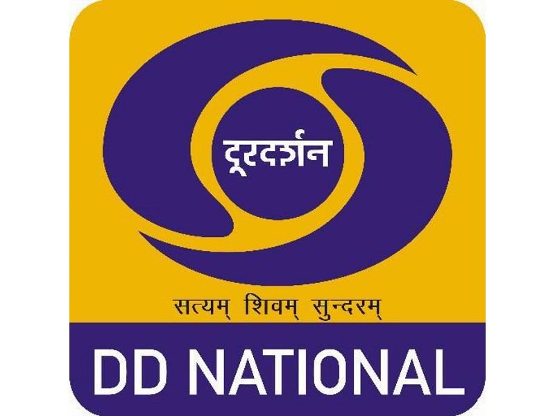

Cinema:

The Films Division was constituted in January 1948 by re-christening the erstwhile Information Films of India and the Indian New Parade set up in 1943, primarily for war coverage. The Cinematograph Act of 1918 was Indianised in 1952 which made the screening of documentary films compulsory throughout the country.
Since 1949, Films Division has been releasing a documentary or news- based or an animation film every single Friday for the theatres spread across the country, in 15 national languages. Over the decades, the Division has virtually recorded the country's entire post-independence history. With headquarters in Mumbai, Films Division is equipped with all facilities of production studios, recording theatres, editing rooms, animation unit, cameras, video set-up and preview theatres. Dubbing of films in 15 Indian languages is also done in-house.
Radio:

Radio Broadcasting started in India in the early 1920's. The first programme was broadcast in 1923 by the Radio club of Bombay. This was followed by setting up Broadcasting Services in 1927 with two privately-owned transmitters at Bombay and Calcutta. The Government took over the transmitters in 1930 and started operating them under the name of Indian Broadcasting Service. It was changed to All India Radio (AIR) in 1936 and it came to be known as Akashvani from 1957.
Television - Doordarshan:

Doordarshan, a Public Service Broadcaster, is among the largest terrestrial television network in the world. The service was started in New Delhi on 15 September 1959 to transmit educational and development programmes on an experimental basis with half-an-hour programming.
Commencement of regular television service as part of All India Radio commenced in Delhi (1965); Mumbai (1972); Kolkata (1975), Chennai (1975). Doordarshan was established on 15 September 1976. A major landmark thereafter was the introduction of colour television in 1982 coinciding with the 9th Asian Games held in New Delhi that ushered in a major revolution in broadcasting in the country. This was followed by a phase of rapid expansion of Doordarshan when, in 1984 more or less every day saw the installation of a transmitter in the country.